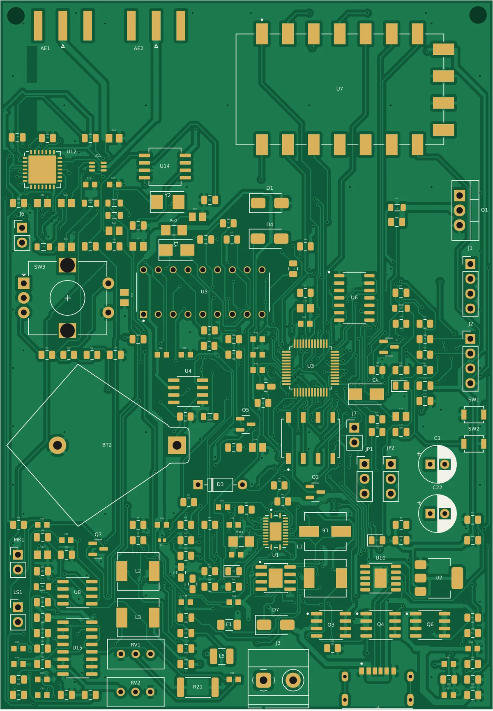
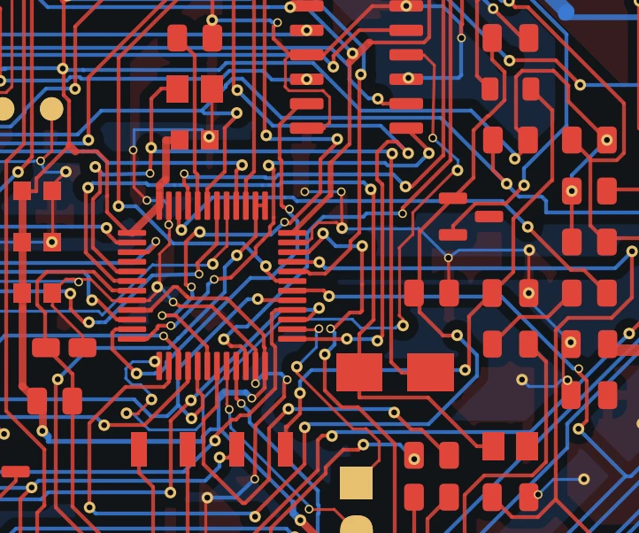

Schematic
Regulator enable pin above its rating
The MP1584EN EN pin was tied straight to the input rail, above its 6 V absolute maximum. Replaced with a resistor divider (R51–R53) and added the missing frequency-setting resistor.
A handheld multi-mode radio on one PCB: an FM voice transceiver with a 7 W RF power stage, a LoRa data link, DTMF signalling, a real-time clock, and a USB-C PD charged 2-cell Li-ion power system, all run by an STM32 microcontroller.
Rendered directly from the final .kicad_pcb file: copper, pads, vias, zones and silkscreen as they will be fabricated.

Top side (F.Cu) with solder mask, ENIG pads and silkscreen.

Detail: STM32F103 (LQFP-48) fan-out and the dense control area around it.
Four blocks share the board: power, control, RF and audio. The microcontroller configures the radios and routes audio between them.
flowchart LR
subgraph PWR[Power]
USB[USB-C input] --> PD[CH224K<br/>USB-PD 12 V request]
PD --> CHG[BQ24133<br/>2S Li-ion charger]
CHG --> BAT[(2S battery)]
BAT --> BUCK[MP1584EN<br/>buck converter]
end
subgraph CTL[Control]
MCU[STM32F103<br/>microcontroller]
RTC[DS3231 RTC]
DTMF[MT8870<br/>DTMF decoder]
end
subgraph RF[RF]
SA[SA818S<br/>FM transceiver]
PA[RD06HVF1<br/>7 W power stage]
SW[PE4259<br/>RF switch]
LORA[SX1278<br/>LoRa]
MIX[SA612<br/>mixer]
ANT1((AE1))
ANT2((AE2))
end
subgraph AUD[Audio]
MIC[Microphone]
MUX[CD4053B<br/>analog switch]
AMP[LM386<br/>amplifier]
SPK[Speaker]
end
BUCK --> MCU
MCU -- UART --> SA
MCU -- SPI --> LORA
MCU -- I2C --> RTC
DTMF --> MCU
SA --> PA --> SW --> ANT1
LORA --> ANT2
MIC --> MUX --> SA
SA --> AMP --> SPK
SA --> DTMF
MCU --> MUX
| Block | Part | Role on this board |
|---|---|---|
| Power | CH224K | Negotiates 12 V from a USB-C PD charger (single resistor on CFG1). |
| Power | BQ24133 | Switch-mode charger for the 2-cell Li-ion pack, with current sensing. |
| Power | MP1584EN | Buck converter for the logic rails; enable divider and frequency resistor set per datasheet. |
| Control | STM32F103 | Main controller: radio configuration, audio routing, user inputs. |
| Control | DS3231 | Temperature-compensated real-time clock with coin-cell backup. |
| Control | MT8870 | Decodes DTMF tones received over the voice channel. |
| RF | SA818S | FM voice transceiver module. |
| RF | RD06HVF1 | RF power MOSFET stage for a 7 W output target. |
| RF | PE4259 | RF switch on the antenna path. |
| RF | SX1278 | LoRa link for long-range low-rate data. |
| RF | SA612 | Double-balanced mixer and oscillator stage. |
| Audio | CD4053B | Analog switch that routes microphone and audio paths. |
| Audio | LM386 | Speaker amplifier. |
The first complete layout failed design-rule checks in hundreds of places and hid several electrical faults. These are the measured results of the clean-up.
DRC errors that block fabrication, including clearance, unconnected and drill-size violations.
Length of the buck converter's switching node, cut by swapping the positions of two power diodes (D1, D7).
Minimum via drill, moved onto the fab house's standard process so the board needs no advanced-via surcharge.
Power nets widened for current, each change checked against neighbouring copper before it was kept.
The MP1584EN EN pin was tied straight to the input rail, above its 6 V absolute maximum. Replaced with a resistor divider (R51–R53) and added the missing frequency-setting resistor.
Seven pull-up resistors were not connected to any rail, and one CD4053B select input was left floating. All were tied to defined levels.
The SS34 symbol used A/C pin names while the footprint used pads 1/2, so every schematic-to-PCB update silently disconnected the diodes. Fixed the mapping and re-verified both diodes net by net.
New parts were placed only where a clearance map of all existing copper allowed it, not just courtyards. Remaining connections were routed and checked for single-island connectivity on every key net.
An external review flagged several "errors". Each was checked against the datasheets; most were wrong (for example, the charger CELL pin is floating on purpose for 2-cell operation) and the design was left as it was.
Gerbers and drill files generated and verified against the board geometry. Chose 1 oz copper because 2 oz would need wider tracks and spacing than the 0.15 mm signal routing uses, with tented vias and a cost-optimised order.
The current 2-layer board is about one third populated. A 4-layer revision is planned to shrink it to roughly 65 × 90 mm with a solid ground plane on layer 2, a tighter regulator loop next to its controller, and better isolation between the RF stage and the switching supply.